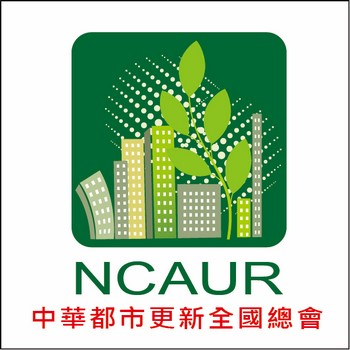

中華都更總會-成立宗旨
一個從根從心做起，創新整合的公益社團
中華都市更新全國總會，自101年12月開始籌備，並於102年9月7日正式成立。 本會發起之緣由，乃有感於近年全台結構不佳，機能不足且超過30年屋齡之老舊房屋，已超過三百萬戶。然「都市更新條例」自民國87年公布實施後，其中成功都更案例，卻是鳳毛麟角。為改善住宅居住環境，保障人身生命安全，復甦都市生活機能，乃思以提供地主資訊及專業知識，維護地主權益，建立地主及實施者間互信機制，並向都更主管相關單位提供可行性建言，以保障建築品質及都更過程之安全平等為宗旨，遂籌設全國性社團「中華都市更新全國總會」。
本會發起人囊括都市更新相關領域業專業人士：律師、建築師、估價師、地政士、會計師、不動產經紀人、都更規劃公司等專業人員。皆秉持服務大眾、回饋社會之心，積極辦理各項都市更新相關之教育訓練課程、座談會、講座等活動，充實住戶都市更新資訊並提供資詢服務，期望住戶能了解自身應有合理權益，由內而外、由下而上，主動關切生活環境、公共利益，增進推動都市更新效率。
對都市更新有切身需求之一般民眾及中小企業主為本會之主要成員，目前僅就雙北地區即有約100萬戶住家屋齡超過30年，這些老屋的所有權人或具影響處分權者也大多是老人，這些住戶才真正是都更成敗之關鍵者，在高齡化的時代，正可以導引『三老一新』老人、老屋、老梗(智慧)進行事業第二春～『自宅的更新』，期許在傳統『產官學』之外，引入民間資源與經營效率，重新匯整『產官學民』，透過總會成員的努力及政府的優質政策、公信公權力建構出『地主、實施者、政府、社會公益』四者間之溝通橋梁，並以總會為推動全國都市更新之平台，普及地主都更知識，提升與實施者間資訊平衡，政府都更政策與實務推動結合，改善城市外貌，促進經濟發展，期望能從多元面向，創造全國都市更新之美好前景。
地址：10580台北市南京東路四段150號2樓 電話：02-25780880#233 傳真：02-25786600
Copyright @ National Chinese Association for Urban Renewal
IE8.0 & Firefox 3.0 以上版本瀏覽器